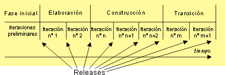

| Concepto: Fase |
 |
|
¿Qué es una fase?Mientras que el objetivo de un proyecto es la producción de un producto, los objetivos específicos del equipo que está al cargo de un proyecto varían sustancialmente a lo largo del proyecto. Al principio, suele haber una considerable laxitud en los requisitos del producto. No siempre está claro si el proyecto es factible ni si tiene posibilidades de ser rentable. En ese punto, es fundamental dar respuesta a estas cuestiones y no vale la pena empezar a desarrollar el producto en serio. De la misma forma, hacia el final del proyecto, el producto ya está completo y las cuestiones de calidad, entrega y completitud pasan a ser centrales. Las tareas se inician de formas nuevas. Los productos de trabajo tendrán contenidos nuevos. Para tener en cuenta estas observaciones fundamentales en la definición de un proceso de entrega, UMA recomienda la división del proceso en una secuencia de fases. Cada fase tiene sus propios objetivos, su propio estilo de iteración y normalmente personaliza sus tareas y productos de trabajo de forma diferente. Iteración y fasesCada fase puede desglosarse en iteraciones. Una iteración es un bucle de desarrollo completo que tiene como resultado un release (interno o externo) de un sistema ejecutable, normalmente un subconjunto del producto final que se desarrolla, que tiene una evolución creciente de una iteración a otra hasta que llega a ser el producto que finalmente se entrega. El diagrama siguiente proporciona un ejemplo de la descomposición de un proyecto en fases e iteraciones.  Fases e iteraciones ejemplificadas en RUP Los releases que coinciden con el final de una fase son de más relevancia (releases principales) que los que se producen para una mera iteración (menores). |
© Copyright IBM Corp. 1987, 2005 Reservados todos los derechos |